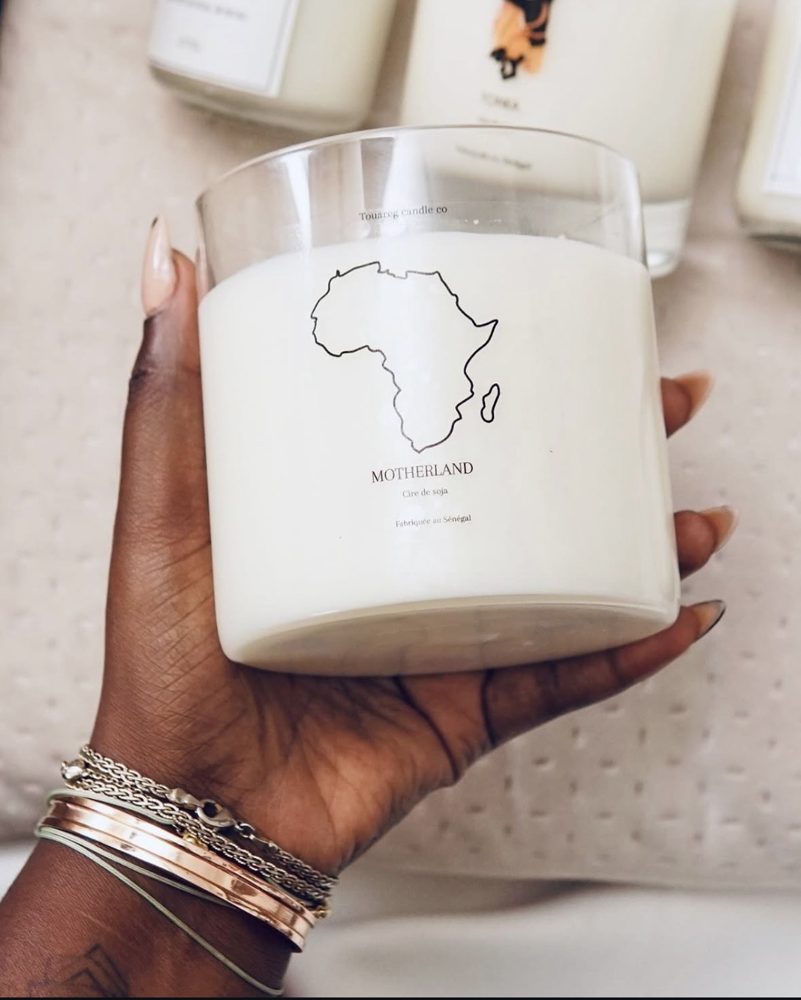
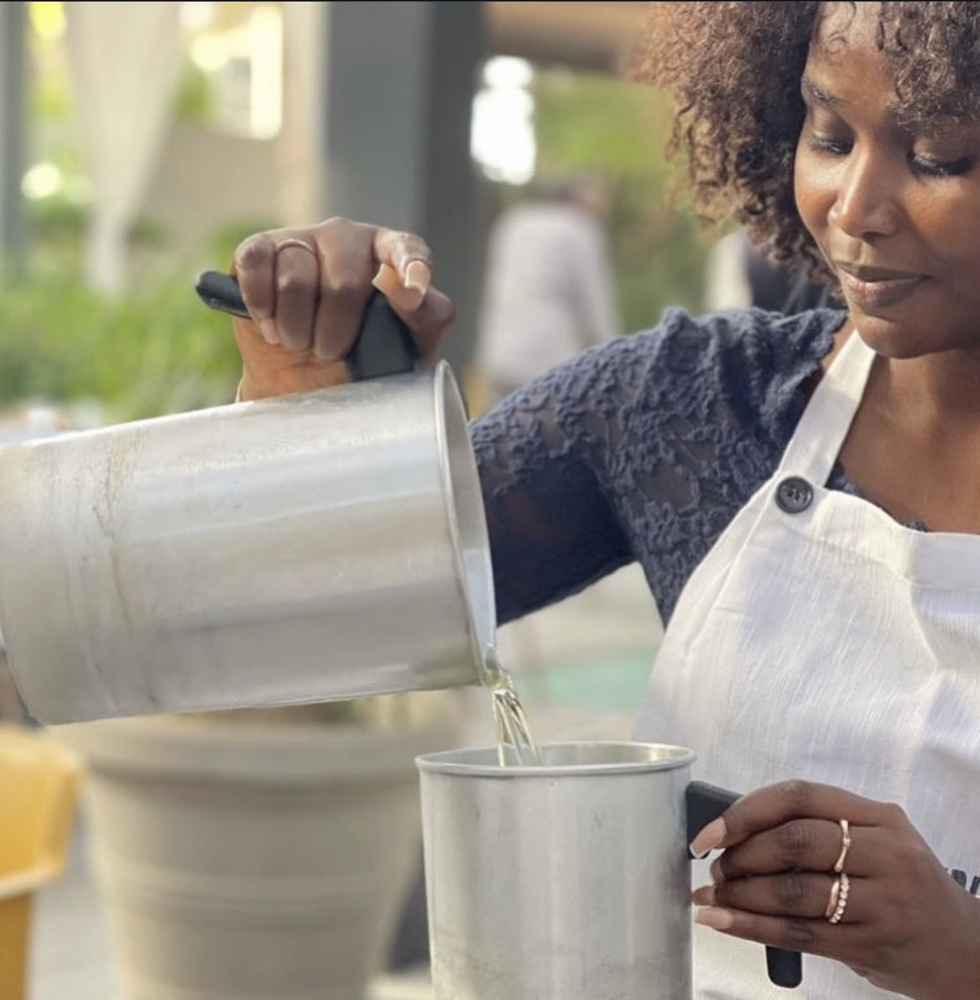
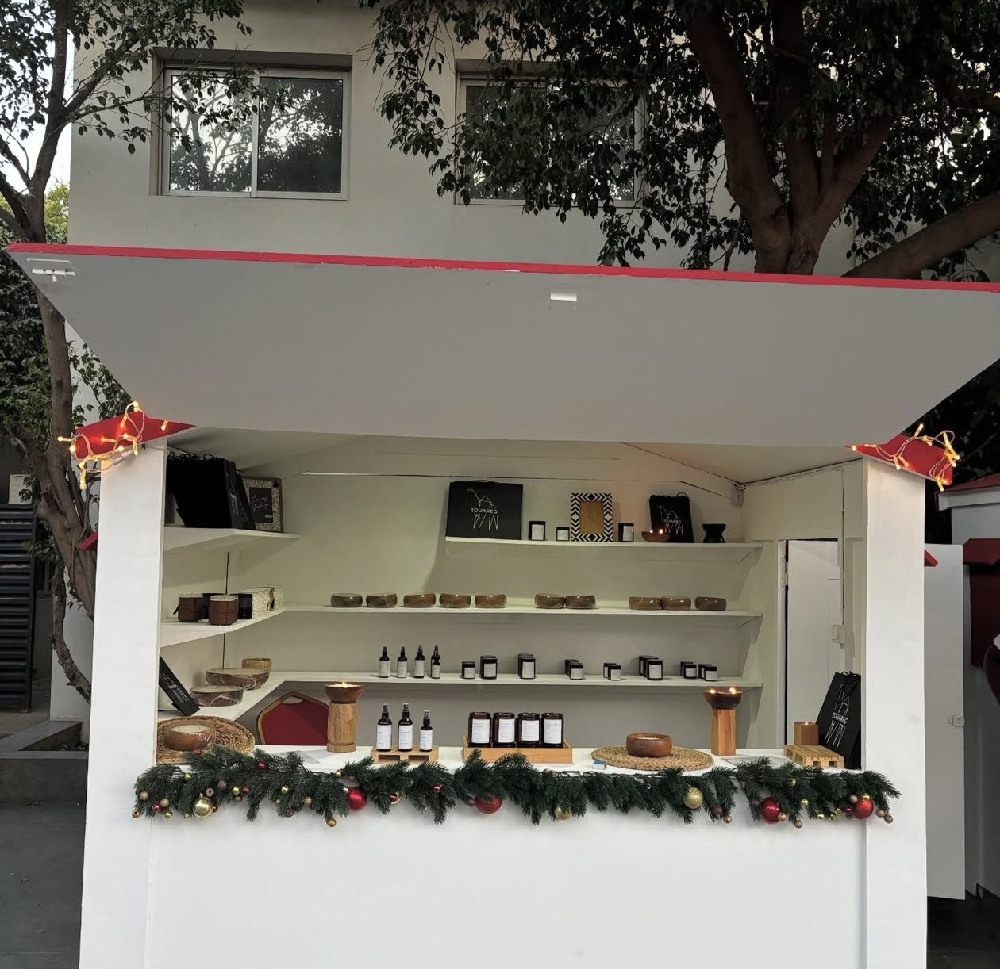
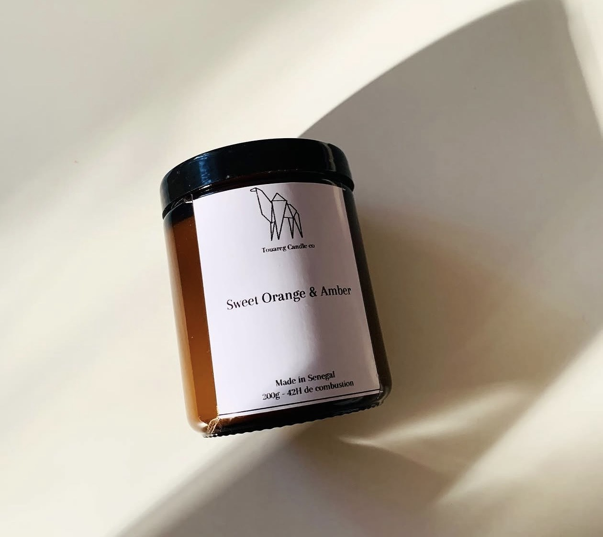
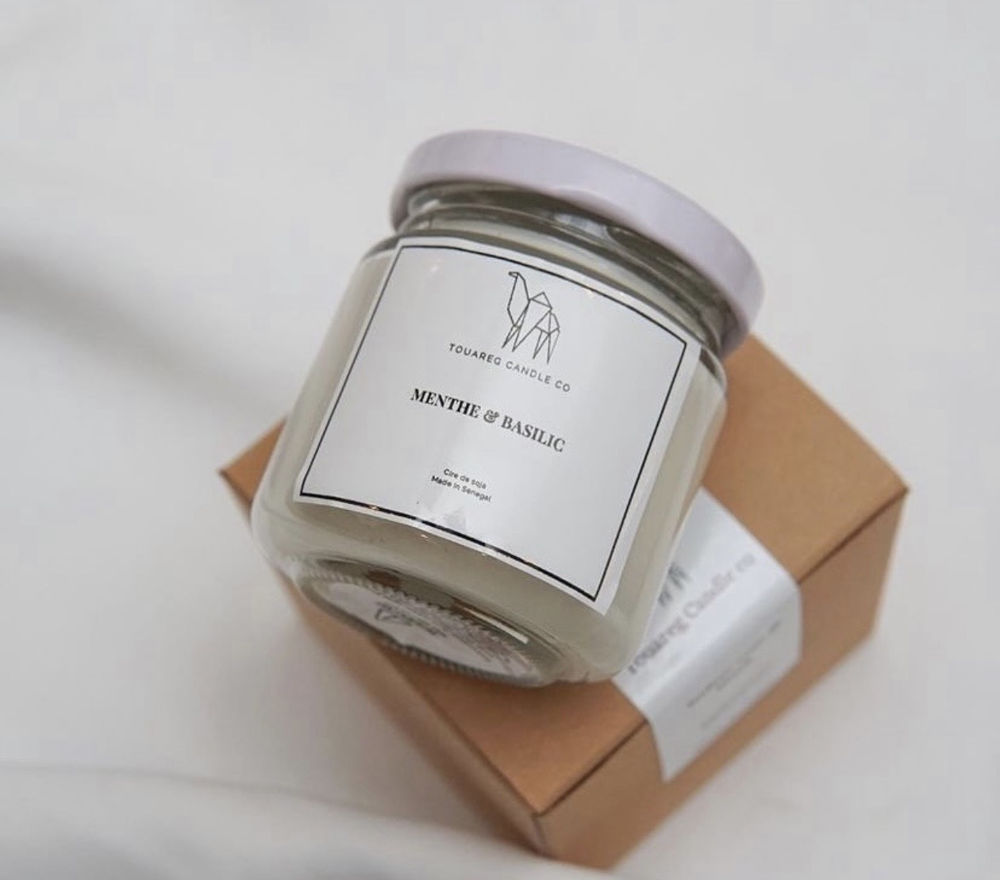
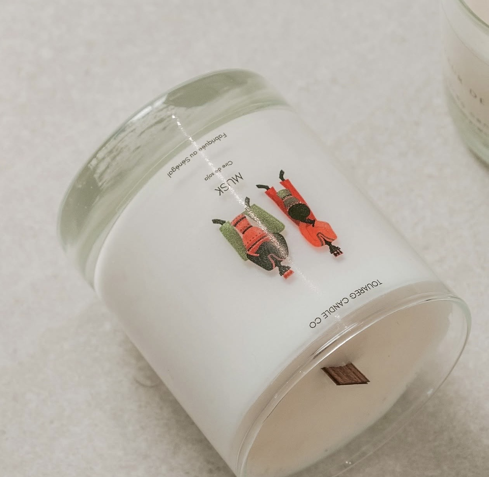
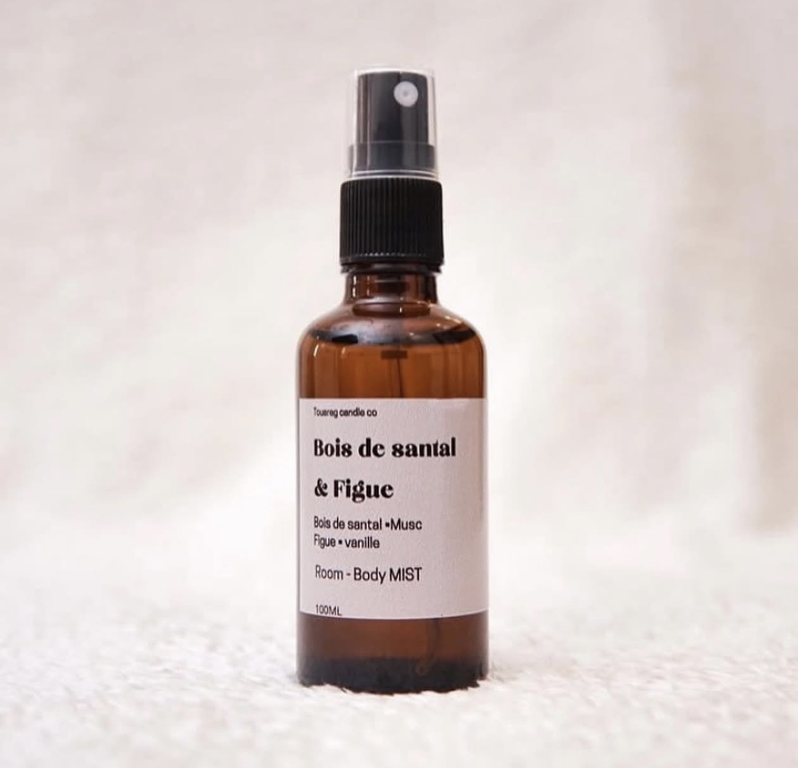

ENTREPRENEURIAT · BRANDING
Touareg Candle Co.
Construire une marque, son identité et son univers — jusqu’à l’expérience client.
COMMUNICATION · BRANDING · DIGITAL
Chargée de communication · Créatrice de contenus · Entrepreneure
Je construis des identités, des contenus et des expériences qui donnent du sens aux marques et aux projets.

Professionnelle de la communication, mon parcours s’est construit entre agence, groupes internationaux et entrepreneuriat. J’ai développé une expertise en communication corporate, stratégie de marque, création de contenus, gestion de projets et développement d’univers de communication.
À travers Touareg Candle Co., j’ai également conçu et développé une marque de A à Z : identité, positionnement, storytelling, contenus, campagnes, événements et expérience client.
Communication corporate · interne & externe · stratégie éditoriale · communication de marque · gestion de projets
Identité de marque · positionnement produit · univers de communication · storytelling · lancement de campagnes
Création de contenus · supports de communication · réseaux sociaux · développement de visibilité digitale
Organisation d’événements · ateliers · coordination d’interlocuteurs · gestion de prestataires
Agence · International · Entrepreneuriat
Touareg Candle Co · Dakar
Création et développement d’une marque premium de bougies parfumées et produits d’ambiance. Identité, positionnement, stratégie de communication, contenus, storytelling, campagnes, ateliers, événements et relations partenaires.
EssilorLuxottica · Paris
Communication dans un environnement international, création et diffusion de supports, communication interne et coordination avec différents services.
Essilor · Paris
Déploiement d’actions de communication, création de supports internes et externes, suivi de projets et collaboration avec les équipes métiers.
Axiom Académie · Doha
Création de contenus pédagogiques numériques et adaptation des contenus à un public international.
Publicis · Paris
Suivi de campagnes, coordination avec les équipes créatives, préparation de supports clients et suivi opérationnel.






Communication — niveau Master 2 suivi
2013 — 2015
Licence 3 Information-Communication
2013
Information-Communication
2010 — 2012
VOUS AVEZ UN PROJET ?